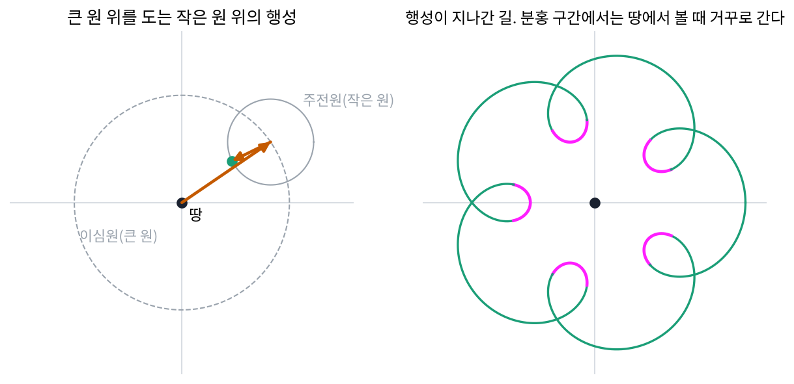
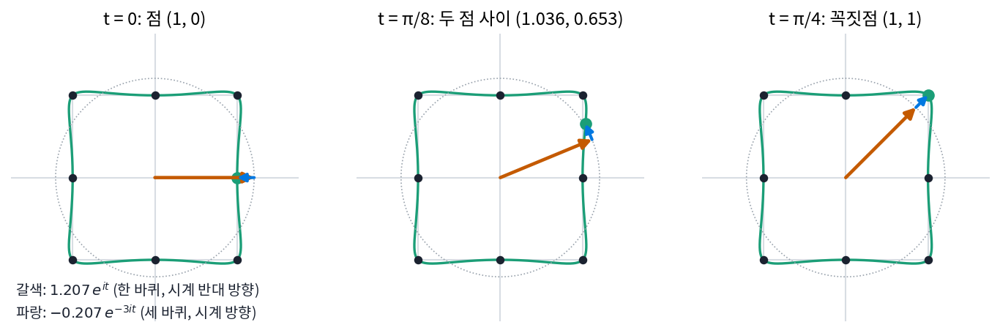
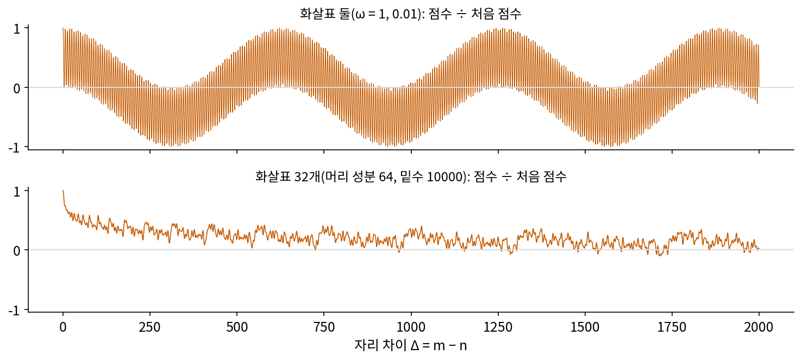

복소 푸리에 급수: 닫힌 곡선은 도는 화살표들의 합
이제 주파수 k로 도는 화살표 eikt를 쓸 수 있다. 펜이 닫힌 곡선을 한 바퀴 그리는 시간을 2π로 잡으면, 펜 끝의 자리는 복소수 하나 z(t)로 적히고, t가 2π만큼 지나면 같은 자리로 돌아오는 주기 함수가 된다. 값 하나가 되풀이되면 주파수가 정수배인 물결의 합으로 적었다. 값이 복소수 하나로 되풀이되면, 주파수가 정수배인 도는 화살표들의 합으로 적을 수 있지 않을까? 화살표를 하나씩 앞 화살표 끝에 이어 붙이면 마지막 끝이 펜 끝이 된다.
역사: 원 위의 원으로 하늘을 그리다
화살표를 이어 붙여 곡선을 그리는 생각은 아주 오래되었다. 행성은 하늘에서 대체로 한쪽으로 움직이지만, 화성은 몇 달 동안 거꾸로 가다가 다시 돌아선다. 고대 그리스 천문학은 모든 움직임을 등속 원운동(일정한 속도로 도는 원운동)으로 설명하려 했으므로 원 하나로는 이 역행을 그릴 수 없었다. 아폴로니오스(기원전 3세기)와 히파르코스(기원전 2세기)를 거쳐 프톨레마이오스(2세기)가 『알마게스트』에 정리한 답은 원 위에 원을 얹는 것이었다. 땅 둘레를 도는 큰 원(이심원)의 한 점을 중심으로 작은 원(주전원, 영어로 epicycle, 에피사이클)이 돌고, 행성은 작은 원 위에 있다. 작은 원이 충분히 빠르게 돌면, 땅에서 본 행성이 잠시 거꾸로 간다.

근대 천문학이 태양 중심설과 타원 궤도로 넘어간 뒤, 「주전원을 하나 더 얹는다」는 말은 관측에 맞추려고 원을 덧붙이기만 하는 설명을 비웃는 말이 되었다. 과학철학자 핸슨(Norwood Russell Hanson)은 1960년 학술지 『아이시스』에 낸 「주전원 천문학의 수학적 힘」에서 이 평가를 뒤집어 보였다. 그는 평면의 점을 복소수로 적고 주기 운동을 원운동들의 겹침으로 나타내는 증명(지금 말로 하면 이 절에서 만들 복소 푸리에 급수)으로, 주전원을 충분히 얹으면 네모 모양의 궤도까지 눈으로 구별할 수 없을 만큼 가깝게 그릴 수 있음을 보였다. 그리고 이렇게 적었다. 「오늘날 천체물리학이나 관측 천문학의 어느 분야에서 쓰는 좌우 대칭이거나 치우친 주기 곡선도, 고정된 이심원 위를 도는 유한 개의 주전원 묶음 안에서 움직이는 점의 합성 운동으로 매끄럽게 그려 낼 수 없는 것은 없다.」 프톨레마이오스 체계의 약점은 계산 도구가 모자란 데 있지 않았다는 것이 핸슨의 주장이다.
점 8개로 된 네모를 화살표로
핸슨이 예로 든 네모로 직접 해 보자. 손으로 계산할 수 있게 점 8개만 쓴다. 변의 가운데 (1, 0)에서 출발해 시계 반대 방향으로 꼭짓점과 변의 가운데를 번갈아 지난다. 복소수로는 z₀ = 1, z₁ = 1 + i, z₂ = i, z₃ = −1 + i, z₄ = −1, z₅ = −1 − i, z₆ = −i, z₇ = 1 − i다. 펜은 시간 2π 동안 8점을 고르게 지나므로 점 n은 시각 2πn/8에 있다.
주파수 k인 화살표 ck 를 구하는 방법은 「곡선을 거꾸로 돌려 놓고 평균 내기」다. 점마다 e−ikt를 곱해 주파수 k인 화살표의 돌기를 멈추게 하면, 그 화살표는 제자리에 멈춰 서고 나머지 화살표는 여전히 돌아서 평균하면 지워진다. k = 1이면 점 n에 e−iπn/4를 곱한다. 짝수 번째 점(변의 가운데)은 1로, 홀수 번째 점(꼭짓점)은 1.414로 모두 실수 축에 모인다. 여덟 값의 평균은 (4 × 1 + 4 × 1.414)/8 = (1 + √2)/2 = 1.207이다. k = −3이면 e3iπn/4를 곱하는데, 이번에는 변의 가운데가 1, 꼭짓점이 −1.414로 엇갈려 평균이 (1 − √2)/2 = −0.207이 된다. 나머지 k(−2, −1, 0, 2, 3, 4)는 여덟 값이 원을 따라 고르게 흩어져 평균이 0이다.
| 주파수 k | −3 | −2 | −1 | 0 | 1 | 2 | 3 | 4 |
|---|---|---|---|---|---|---|---|---|
| 화살표 c_k | −0.207 | 0 | 0 | 0 | 1.207 | 0 | 0 | 0 |
점 8개에서 화살표 8개를 계산했는데 살아남은 것은 둘뿐이다. 길이 1.207짜리가 시계 반대 방향으로 한 바퀴 돌고, 그 끝에 길이 0.207짜리가 시계 방향으로 세 바퀴 돈다. t = 0에는 두 화살표가 1.207과 −0.207로 서로 반대를 가리켜 (1, 0), t = π/4에는 같은 방향을 가리켜 길이 1.414인 꼭짓점 (1, 1)이 된다. 작은 화살표가 큰 화살표를 꼭짓점에서는 밀어 주고 변의 가운데에서는 당겨 네모의 모서리를 만든다. 두 화살표는 8점을 모두 지나지만, 점 사이에서는 곧은 변을 따르지 않는다. t = π/8에는 (1.036, 0.653)으로 변 x = 1의 바깥으로 0.036 불룩 나간다.

살아남은 주파수가 1과 −3인 것은 우연이 아니다. 네모를 90° 돌려도 네모이므로 주파수 k가 1과 4의 배수만큼 차이 나는 화살표만 남는다. 대칭이 살아남을 주파수를 고른다는 이 생각은 뒤에서 다시 본다.
점 대신 이어진 곡선이면 평균이 적분이 된다. 펜 끝 z(t)를 도는 화살표들의 합으로 적은 것을 복소 푸리에 급수 (닫힌 곡선을 도는 화살표의 합으로 / complex Fourier series)라 한다.
cₖ를 구하는 적분은 실수 푸리에 급수에서 계수를 기저 cos kt, sin kt 와의 내적으로 구하던 것과 같은 계산이다. 곡선 z(t)를 기저 eikt에 사영해 그 축의 좌표를 읽는다. 사인과 코사인 둘로 나눠 적던 것을 도는 화살표 하나가 맡았고, 주파수에 음수가 생겨 도는 방향까지 담는다. 핸슨이 네모 궤도를 증명할 때 쓴 것도 이 급수다. 이 화살표들의 사슬을 에피사이클이라 부른다.
ML에서: RoPE 의 점수는 자리 차이로 그린 에피사이클이다
질의와 열쇠의 성분을 둘씩 묶어 자리 번호만큼 돌리는 방법을 회전 위치 인코딩(rotary position embedding, 줄여서 RoPE)이라 한다. 쑤젠린(Jianlin Su)과 동료들의 논문(2021)은 이 방법을 처음부터 복소수로 적었다. 자리 m의 질의 묶음에는 eimω를, 자리 n의 열쇠 묶음에는 einω를 곱한다. 두 벡터의 내적은 묶음마다 「질의 묶음 × 열쇠 묶음의 켤레」(켤레는 허수 부분의 부호를 바꾼 수로, 화살표를 실수 축에 비춘 거울상이다)에 ei(m−n)ω가 곱해진 것들의 합의 실수 부분이 된다(논문의 식 35). 묶음 j의 「질의 × 열쇠의 켤레」를 hⱼ, 자리 차이를 Δ = m − n로 적으면 다음과 같다.
자리 차이 Δ를 시각으로 읽으면 점수 식은 복소 푸리에 급수 Σ cₖ eikt 에서 cₖ 를 hⱼ 로, k 를 ωⱼ 로, t 를 Δ 로 바꾼 꼴이다. 내용이 정한 화살표 hⱼ들이 묶음마다 다른 주파수 ωⱼ로 돌고, 사슬 끝의 가로 자리가 어텐션 점수다. 다른 점은 주파수가 정수배가 아니라 등비수열이라는 것이다. 아래 그림처럼 화살표 32개짜리 사슬은 자리 차이가 커질수록 점수가 대체로 줄어든다. 논문은 자리 차이가 멀수록 점수가 줄어드는 성질을 「먼 거리의 감쇠」라 불렀다. 화살표 둘짜리 사슬과 무엇이 달라서 그런지는 아래 문제 9에서 따진다.

문제 7. 찻잔 놀이기구
놀이공원의 찻잔 놀이기구는 큰 원판이 1분에 한 바퀴 시계 반대 방향으로 돌고, 원판 가장자리(가운데에서 4 m)에 붙은 작은 원판이 그 위에서 돈다. 찻잔은 작은 원판의 가장자리(작은 원판 가운데에서 1 m)에 있어서, 땅에서 보면 1분에 세 바퀴 시계 방향으로 돈다. (가) 찻잔의 자리를 도는 화살표 둘의 합으로 적어라. (나) 찻잔이 놀이기구 가운데에서 가장 가까울 때와 가장 멀 때의 거리와, 그때가 출발 뒤 몇 초인지 구하라. 출발할 때 두 화살표는 모두 동쪽을 가리켰다. (다) 찻잔이 그리는 자취는 어떤 모양인가?

(가)는 4eit + e−3it이고 t는 1분에 2π요. (나)는 둘이 같은 방향일 때 5 m, 반대일 때 3 m요. 큰 화살표가 반 바퀴 돌면 반대가 되니까 30초에 3 m요.

30초면 t = π예요. 그때 작은 화살표는 어디를 가리키죠?

e−3iπ = −1이라 서쪽이고, 큰 화살표도 서쪽이네요. 같은 방향이라 5 m예요. 작은 것도 같이 도니까 반 바퀴로는 안 되는구나.

두 화살표의 각도 차이는 t − (−3t) = 4t야. 이게 π가 되면 반대야. t = π/4, 3π/4, 5π/4, 7π/4니까 7.5초, 22.5초, 37.5초, 52.5초에 3 m. 차이가 2π의 배수인 0, 15, 30, 45초에는 같은 방향이라 5 m고.

(다)는요? 가까운 곳 넷과 먼 곳 넷이 번갈아 와요.

점 8개 네모처럼 주파수 1과 −3인 화살표 둘이에요. 그런데 거기는 작은 화살표가 −0.207이라 출발할 때 반대를 가리켰고, 여기는 +1이라 같은 방향이에요. 그래서 네모에서는 출발점이 변의 가운데였는데, 여기는 출발점이 가장 먼 곳, 모서리예요. 동서남북에 모서리가 있는 둥근 마름모예요. 작은 화살표의 부호가 모서리를 45° 옮긴 거고요.

찻잔 타면 어지러운 게 두 원판이 반대로 돌아서였구나. 놀이공원에 가면 모서리에서 손을 흔들어 볼게요.
문제 8. 시작점을 옮기거나 거꾸로 그리면
점 8개 네모의 화살표는 c₁ = 1.207, c₋₃ = −0.207 이고 나머지는 0이었다. (가) 같은 네모를 꼭짓점 (1, 1) 에서 출발해 같은 방향으로 그리면 화살표는 어떻게 바뀌는가? (나) 출발점은 (1, 0) 그대로 두고 시계 방향으로 그리면? (다) 네모 전체를 2 + i 만큼 옮기면?
(가)는 다시 계산해 봤어요. 점을 하나씩 당겨 넣으니까 c₁ = 0.854 + 0.854i, c₋₃ = 0.146 + 0.146i가 나와요. 둘 다 숫자가 바뀌었으니까 다른 곡선의 화살표 같은데요.
두 화살표의 길이를 재 봐요.

√(0.854² + 0.854²) = 1.207, √(0.146² + 0.146²) = 0.207이요. 길이는 그대로예요.
출발을 한 칸, 시간으로 2π/8만큼 앞당긴 거니까 화살표마다 그만큼 미리 돌아 있는 거야. 주파수 k인 화살표는 k × 2π/8만큼 미리 돌아 있으니 eik·2π/8가 곱해져. k = 1은 45°, k = −3은 −135°. 1.207 × eiπ/4 = 0.854 + 0.854i, −0.207 × e−3iπ/4 = 0.146 + 0.146i로 맞아.
(나)와 (다)는요?
거꾸로 그리면 시간을 뒤집은 거라 주파수의 부호가 바뀌어요. c₋₁ = 1.207, c₃ = −0.207. (다)는 모든 점에 2 + i를 더하면 돌지 않는 화살표 c₀만 2 + i가 되고 나머지 화살표는 바뀌지 않아요. c₀가 곡선의 무게중심이었네요.

녹음 파일을 처음부터 듣든 중간부터 듣든 노래는 같은 노래인 것과 비슷하네요. 출발점을 옮기는 건 듣기 시작하는 곳을 옮기는 거라, 화살표의 방향만 바꾸고 길이는 못 바꿔요.
문제 9. RoPE 점수의 사슬이 처음으로 돌아올 때
화살표 h 를 모두 1로 둔 RoPE 점수를 본다. (가) 화살표가 둘이고 주파수가 ω = 1, 0.01 이면 점수는 cos Δ + cos 0.01Δ 이다. Δ = 0, 3, 6, 314, 628 의 점수를 구하라. (나) Δ = 100 에서 4096 사이에서 점수가 처음 점수 2 에 가장 가깝게 돌아오는 자리 차이는 얼마이고, 왜 그 값인가? (다) 화살표가 32개(머리 성분 64, 밑수 10000)이면 Δ = 100 에서 4096 사이의 가장 큰 점수는 처음 점수의 얼마인가? 둘의 차이를 사슬의 말로 설명하라.
(가)는 2, 0.010, 1.958, −0.013, 1.950이요. (나)는 빠른 화살표가 6.28자리마다 한 바퀴니까 2π의 배수 근처에서 돌아오고… 6에서 1.958이니까 거의 6이요.
Δ는 100 이상에서 찾는 거예요. 그리고 빠른 화살표만 제자리면 될까요?
아, 느린 화살표도 제자리여야 하는구나. 느린 건 628자리에 한 바퀴니까, 628 근처에서 둘 다 제자리 근처라 1.950이요.
628은 2π × 100 = 628.3이랑 정수 칸이 0.3 어긋나서 빠른 화살표가 조금 덜 돌아왔어. 계산해 보면 가장 가까이 돌아오는 건 Δ = 1885에서 1.999야. 1885는 600π = 1884.96이랑 거의 같아서, 빠른 화살표는 300.01바퀴, 느린 화살표는 3.000바퀴를 돌았어.

주파수의 비가 100이라는 정수였기 때문에 두 화살표가 같이 제자리로 오는 때가 있었어요. (다)는요?

화살표 32개면 가장 큰 값이 처음 점수의 0.579배예요(Δ = 101). 주파수가 10000−2j/64라서 이웃한 주파수의 비가 1.33배쯤인데 정수 비가 아니에요. 32개가 동시에 제자리로 오는 Δ가 없으니까, 점수가 처음처럼 높아지지 못해요.

친구 셋이 각자 3일, 4일, 6일마다 동아리방에 오면 12일마다 셋이 만나요. 그런데 오는 간격이 3.3일, 4.4일처럼 딱 떨어지지 않으면 셋이 한꺼번에 만나는 날이 거의 없겠죠.